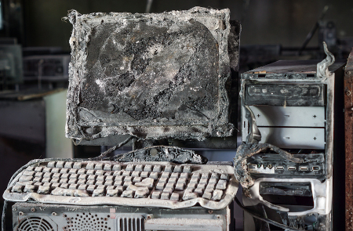

Las amenazas físicas para el sistema son las producidas por el hombre, accidental o intencionadamente, y por la naturaleza. Las amenazas más comunes de este tipo son:
- Robos.
- Sabotajes.
- Incendios.
- Inundaciones.
- Calidad del aire (humedad relativa).
- Fallos en el suministro eléctrico.
- Desastres naturales (terremotos, inundaciones).
En la imagen se puede observar el daño que las amenazas físicas pueden causar a los componentes de un equipo informático, en este caso un incendio.
Estos daños pueden deberse a fallos en la corriente eléctrica, mala ventilación o temperatura inadecuada.

Foto fuente: www.kaspersky.es
En la tabla se muestran diferentes amenazas físicas junto con los daños que pueden causar en los sistemas informáticos.
| AMENAZA | DEFINICIÓN | DAÑO |
|---|---|---|
| Temperatura del aire. | Temperatura en la sala de servidores, el armario de conexiones o los equipos. | Fallos en el funcionamiento de los equipos. Disminución de la vida de los equipos. |
| Filtraciones de líquidos. | Filtraciones de agua y otros líquidos. | Daños en los pisos, el cableado y los equipos causados por líquidos. |
| Error humano y acceso del personal. | Daños involuntarios causados por el personal. Ingreso no autorizado y/o por la fuerza al CPD. | Daño a los equipos y pérdida de datos. Robo o sabotaje de equipos. |
| Humo e incendios. | Incendio de equipos eléctricos o materiales. | Fallos en los equipos. Pérdida de bienes y datos. |
| Calidad del aire. | Productos químicos suspendidos en el aire y partículas de polvo. | Situaciones de riesgo para el personal. Mal funcionamiento de equipos y dispositivos por obstrucción de filtros y ventiladores. |